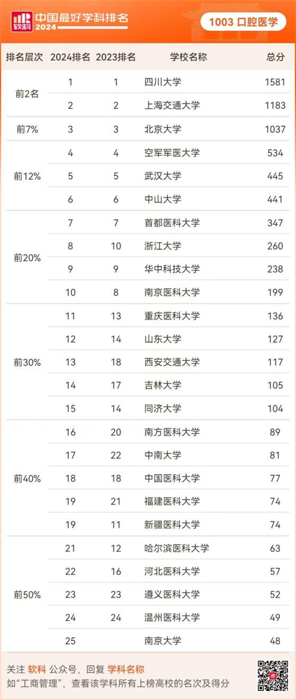

学院通知 · 科研创新
四川大学口腔医学连续七年荣列“2024软科中国最好学科排名”全国第一
发布时间：2024/10/15
2024年10月15日，高等教育专业评价机构软科正式发布“2024软科中国最好学科排名”，2024中国最好学科排名发布的榜单包括94个一级学科，涉及486所高校的4924个学位点。四川大学口腔医学获1581分，连续七年位列口腔医学全国第一。 软科中国最好学科排名的指标体系包括人才培养、平台项目、成果获奖、学术论文、高端人才5个指标类别，下设18个指标，共计70余项反映学科竞争力的观测变量。数据全部来自第三方数据源，如教育部、科技部、国家自然科学基金委员会、国际和国内文献数据库等。
